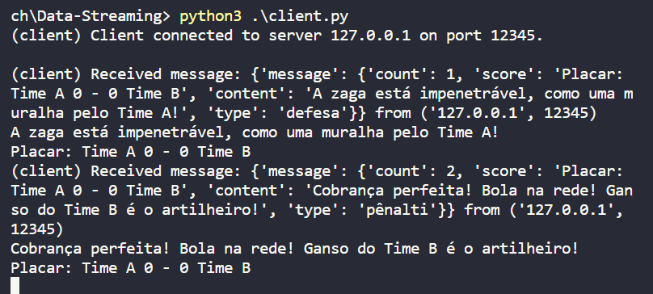
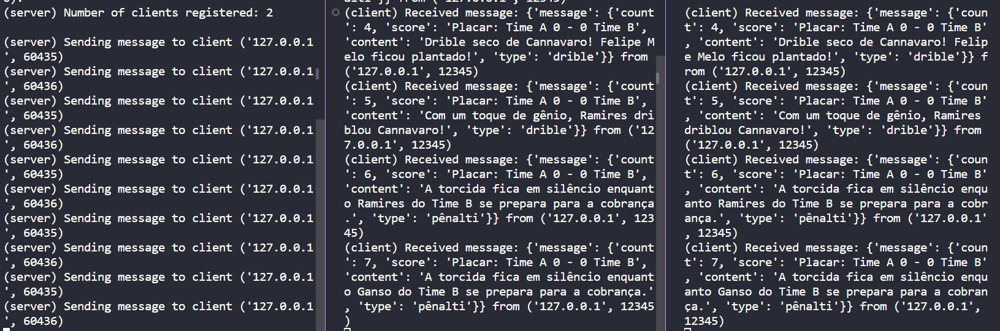

In this endeavor, we have implemented a robust streaming server demonstrating the ubiquitous application of streaming services in contemporary digital ecosystems such as Netflix, stock exchange platforms, and meteorological forecast streaming. Project Implementation
Stream Nature: Our team elected to focus on a multimedia stream, encapsulating a sequence of messages, each bearing a distinct type and at least two specific fields. A crucial field is the packet order in the stream, initiating from 1.
Command Line Configuration: A feature enabling the configuration of the time interval for message transmission in the stream via command line has been successfully integrated.
Client-Server Interaction: Multiple clients can register with the server to receive the stream, facilitated through UDP/IP. Upon termination, each client generates statistics on UDP usage, including packet loss and out-of-order packet arrival.

server.py: This file encapsulates the core functionality of the streaming server, handling client registrations, message streaming, and ensuring the seamless transmission of packets to registered clients.
client.py: This script represents the client-side logic, handling server communication, data reception, operation implementation on the received data, and generating UDP usage statistics upon client termination.
simulate_game.py: Simulate an soccer game using random choices lib, based on soccer Apps notifications, we use the random lib to choose between the possible events from the game, using random soccers phrases based on the event.
For this project we choosed to use an JSON structure, using the fields:
message= {
"count": Integer,
"score": String,
"content": String,
"type": Integer
}
Multiple clients can connect to the simulated game transmission, such as that in every client will receive the game phrase event and show the score after this event.
